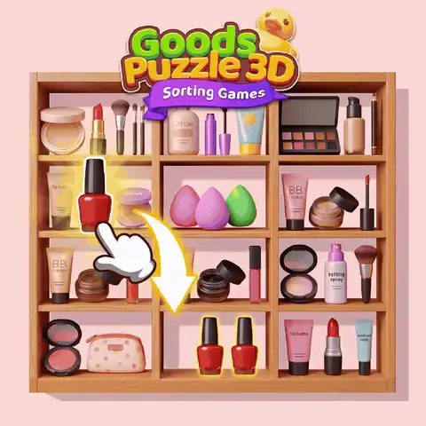
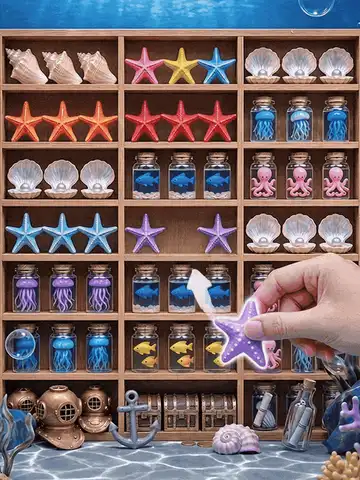
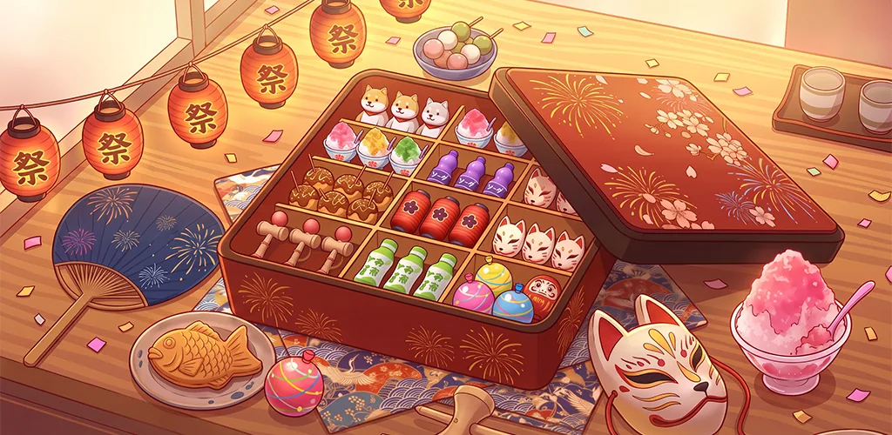
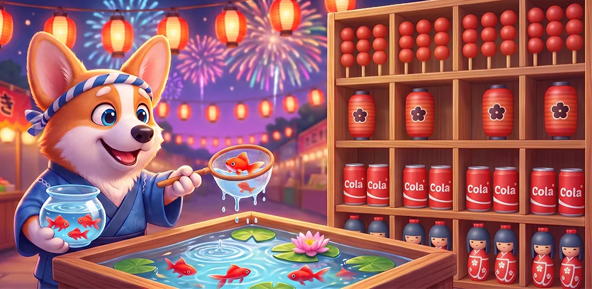

02 / 商店视觉 · 动态创意 · 本地化
Goods
Puzzle 3D
围绕商店展示与海外营销建立多方向视觉体系，涵盖主视觉系统、动态商店素材，以及面向日本市场的夏日祭主题表达。
角色
视觉设计师范围
商店视觉与买量素材重点
本地化设计
视觉设计师范围
商店视觉与买量素材重点
本地化设计

A / 主视觉
Store presence for overseas audiences.
以轻松有趣的超市场景，将分类玩法转化为一眼可识别的视觉。货架、商品、操作手势与品牌元素共同协作，让玩家在阅读详细文案之前就能理解核心互动。

B / 动态商店素材
Motion turns the shelf into a story.
动态素材以不同收集主题进行延展，同时保持统一的互动提示：直观的操作手势、等待整理的货架，以及立即可理解的分类反馈。每张动图都能独立适配不同商店展示场景。



C / 日本夏日祭主题
Localization is a visual context shift.
面向日本夏日祭方向，视觉本地化不止于文字替换。祭典游戏摊位、灯笼光色、食物摊细节与熟悉的季节物件，共同将相同玩法重塑为更具当地共鸣的场景。

